Qué es Ceramic Pro, qué significa ser Elite Dealer y por qué elegir esta marca para tu auto
Cuando hablamos de protección premium para un auto, no todas las marcas juegan igual. Ceramic Pro se ha convertido en una referencia global porque no se queda solo en ceramic coating: también habla de PPF, polarizados y una metodología de instalación que busca consistencia real en el resultado.
Elegir Ceramic Pro para tu carro no es simplemente comprar un nombre reconocido. Es optar por una marca con protocolos claros para ceramic coating, PPF y polarizados, con un lenguaje técnico más serio y con instaladores que, cuando son Elite Dealer, están obligados a operar bajo un nivel más alto de proceso, ejecución y respaldo.

Marca orientada a protección premium del auto, desde ceramic coating hasta PPF y polarizados con una lectura más seria del servicio.
Un sello que eleva la exigencia sobre proceso, experiencia del cliente y coherencia del servicio.
Una marca que entiende la protección como sistema, no como promesa suelta.
Lo que realmente estás eligiendo
- Ceramic Pro es una marca especializada en soluciones premium de protección para vehículos, con presencia en ceramic coating, PPF y polarizados.
- Su propuesta no se limita a un solo producto: trabaja como ecosistema, con procesos de preparación, instalación, mantenimiento y respaldo de marca.
- La marca se posiciona fuerte en detailing premium porque busca resultados predecibles, una aplicación seria y una experiencia más consistente para el cliente final.
- Cuando está bien instalada, la solución ayuda a mejorar repelencia, facilitar mantenimiento y elevar la lectura del brillo y la profundidad del acabado.
- Por eso, al hablar de Ceramic Pro, no se trata solo de una capa o de un servicio puntual: también importa quién lo instala, cómo lo instala y bajo qué nivel de estándar trabaja.
Por qué la marca sí importa cuando vas a proteger tu auto
En el mercado hay muchas opciones para proteger un auto, pero no todas transmiten el mismo nivel de respaldo. Elegir una marca fuerte como Ceramic Pro reduce la improvisación: te acerca a protocolos claros, a una narrativa técnica más ordenada y a una expectativa de servicio mucho más fácil de medir, ya sea en coating, PPF o polarizados.
Eso se vuelve especialmente valioso si tu carro tiene pintura delicada, si quieres preservar lectura premium en el tiempo o si simplemente no quieres invertir en un servicio genérico que se vea muy bien una semana y luego pierda consistencia en mantenimiento, soporte o seguimiento.
Qué significa realmente ese sello
- Ser Elite Dealer no es un detalle decorativo: indica que el taller trabaja bajo un nivel más exigente de marca, proceso y presentación del servicio.
- Suele implicar capacitación más seria, seguimiento a protocolos de instalación y una lectura más profesional de cada caso según pintura, uso y expectativa del cliente.
- También habla de orden operativo: diagnóstico más claro, preparación más rigurosa, recomendación mejor argumentada y un acabado final más consistente.
- Para el cliente, eso se traduce en menos improvisación, menos ruido comercial y más confianza al momento de invertir en una protección premium.
- En pocas palabras, no solo compras una marca reconocida; accedes a una forma más seria de ejecutar servicios de protección premium.
La diferencia no está solo en el producto. Está en quién lo respalda y cómo se ejecuta.
Las 5 razones para mirar la marca con seriedad
-
Reconocimiento real
Es una de las marcas más nombradas cuando se habla de protección premium, detailing de alto nivel y procesos serios para autos exigentes.
-
Sistema completo
No trabaja solo desde el producto, sino desde procesos, cobertura, capas, mantenimiento y consistencia visual.
-
Mejor lenguaje técnico
Permite hablar de instalación, preparación y expectativas de forma más seria y menos improvisada.
-
Posición premium
Es una marca coherente para autos que merecen una lectura de servicio superior y una ejecución más fina.
-
Más previsibilidad
Ayuda a reducir el riesgo de recibir un resultado genérico sin proceso ni criterio de instalación.
Las 5 ventajas del lado del instalador
-
Diagnóstico con criterio
No todos los carros necesitan la misma cobertura ni el mismo enfoque. Un Elite Dealer lo lee mejor desde el inicio.
-
Preparación más rigurosa
La calidad final no depende solo del producto; depende muchísimo de cómo se corrige y prepara la superficie.
-
Servicio más coherente
La experiencia de entrega, explicación y seguimiento suele ser más clara, más premium y mejor ejecutada.
-
Menos improvisación
Se reduce el riesgo de promesas vagas, procesos mal explicados o una instalación que no corresponde al nivel del auto.
-
Resultado más defendible
Cuando la marca y el instalador están alineados, el resultado final suele ser más consistente y más fácil de sostener.
Elegir Ceramic Pro para tu auto tiene sentido cuando lo que buscas es una solución premium bien respaldada.
No se trata de pagar por un nombre solo porque suena fuerte. Tiene sentido elegir esta marca cuando quieres coherencia entre producto, proceso, preparación, experiencia del taller y lectura final del vehículo. En ese escenario, la marca deja de ser un logo y se convierte en una capa real de confianza sobre tu decisión.

Tu auto merece una marca seria
Si el vehículo tiene valor emocional, estético o comercial, vale la pena elegir una marca que esté a la altura de ese activo y no una opción genérica de corto alcance.
Quieres una experiencia más ordenada
La diferencia premium también se siente en cómo te asesoran, cómo explican el proceso y qué tan clara es la recomendación según el uso real de tu auto.
Buscas resultado, no solo promesa
Cuando eliges una marca fuerte y un instalador bien respaldado, aumentas la probabilidad de recibir un resultado bonito, limpio y coherente con lo que te vendieron.
Tres escenarios donde Ceramic Pro cobra mucho más valor
Preservar lectura, no corregir daños después
Cuando el carro está nuevo, Ceramic Pro cobra mucho sentido porque te permite definir desde el principio qué combinación de coating, PPF o polarizados protege mejor esa sensación de orden, profundidad y limpieza.


Facilidad de mantenimiento sin perder presencia
En autos de uso frecuente, la marca cobra sentido cuando lo que quieres es una solución que haga más amable el lavado, mantenga mejor el brillo y ayude a conservar una lectura más limpia a pesar del ritmo diario.


Cuando esperas criterio, no un paquete inflado
Ceramic Pro y un Elite Dealer tienen más valor cuando el cliente no quiere solo una venta, sino una recomendación pensada con criterio para su auto, su presupuesto y su expectativa estética.


La marca importa más cuando quieres una protección premium bien instalada en Bogotá.
Muchos clientes llegan buscando ceramic coating en Bogotá, pero la conversación correcta no termina ahí. También entran en juego PPF, polarizados y la coherencia entre marca, instalador y proceso, especialmente cuando el vehículo tiene un nivel de valor o exigencia superior.
Por eso Ceramic Pro tiene peso real dentro de la ciudad: ayuda a ordenar la decisión para clientes que no quieren un servicio genérico, sino una recomendación seria, una ejecución limpia y una lectura premium más consistente a largo plazo.
Ceramic Pro vale la pena cuando lo instalas con un estándar que esté a la altura del auto.
Porque aporta sistema, respaldo y una lectura más seria de servicios premium como coating, PPF y polarizados.
Porque ser Elite Dealer eleva la exigencia sobre diagnóstico, proceso, instalación y experiencia final.
Porque cuando eliges bien, no solo proteges el auto: proteges la calidad de la decisión que tomaste.

Si quieres entender si Ceramic Pro tiene sentido para tu auto, te lo explicamos con criterio real.
Te ayudamos a evaluar tipo de vehículo, nivel de uso, expectativa estética y qué tanto valor aporta trabajar con una marca premium instalada bajo un proceso serio.
HABLA CON JUAN C.